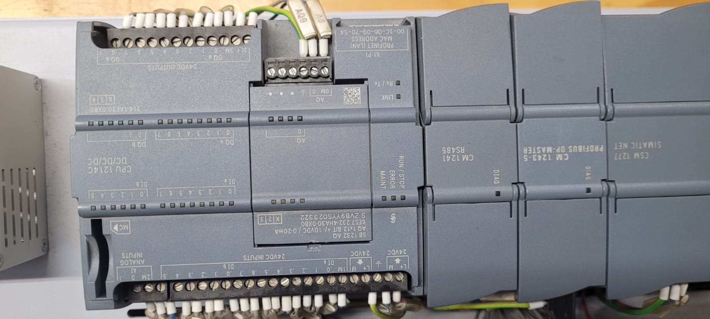
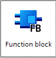
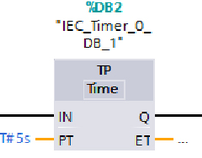
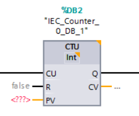
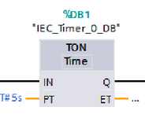

Controlador Lógico Programável

PLC(Programmable Logic Controller) ou Controlador Lógico Programável é um controlador industrial que serve para controlar máquinas e automatizar processos. Ele lê as entrada dos sensores, processa na memória e envia as ordens nas saídas para ligar motores ou acender luzes. As linguagens de Programação é bem padronizada, com a programação em LADDER sendo a mais utilizada.
Programação Ladder
A programação Ladder é uma linguagem utilizada para programar CLPs. Ela representa a lógica de controle por meio de símbolos semelhantes a contatos e bobinas de circuitos elétricos. É muito usada na automação industrial por ser simples de entender e facilitar o controle de máquinas e processos.
Aqui há um pequeno exemplo de como funciona a programação LADDER. Aqui está um programa de uma sinaleira básica que vai do verde até o vermelho, mudando cada um deles em alguns segundos, com um looping que volta a refaz o mesmo circuito repetidas vezes.
Function Blocks

Function Blocks (FB) são blocos de programação utilizados em CLPs para organizar e reutilizar funções de
controle. Eles possuem entradas, saídas e uma lógica interna, permitindo que uma determinada função seja
criada uma vez e utilizada várias vezes no programa.
Exemplos
-Temporizador (TP): controla o tempo de acionamento de um equipamento.

-Contador (CTU): conta eventos, como a quantidade de peças produzidas.

-TON (Temporizador): atrasa o acionamento de uma saída por um tempo determinado.
